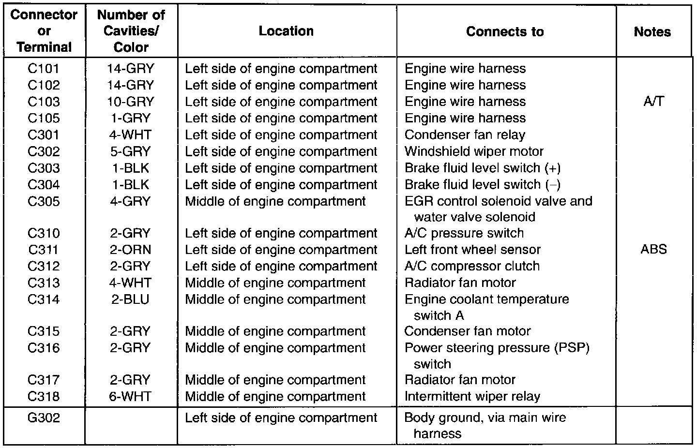
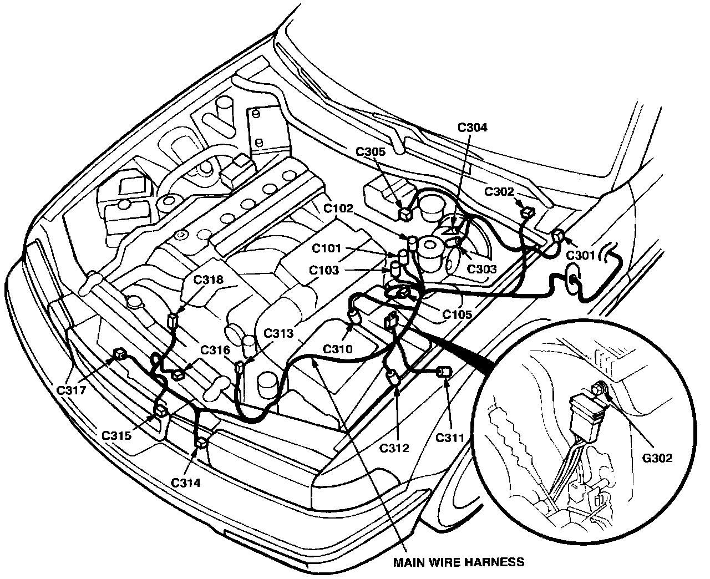

Operation CHARM
: Car repair manuals for everyone.
Home
>>
Acura
>>
1994
>>
Vigor L5-2451cc 2.5L SOHC G25A4 FI
>>
Repair and Diagnosis
>>
Diagrams
>>
Harness
>>
Main Wire Harness (Left Side of Engine Compartment Branch)
Main Wire Harness (Left Side of Engine Compartment Branch)
Main Wire Harness (left Side Of Engine Compartment Branch):

Wire Harness Routing:
